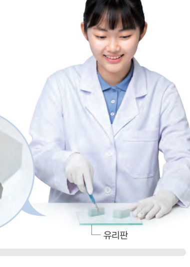

가래떡을 반으로 자르면 표면적은 어떻게 변할까? 가상 우무 실험으로 크기가 다른 세포를 색소에 담가 보고, 표면적과 부피를 계산해 세포가 커지지 않고 분열하는 까닭을 알아보자.
🎯 이 단원을 배우면 — 세포 분열의 필요성을 알고, 세포 분열이 개체의 성장과 어떤 관계가 있는지 설명할 수 있다.
출발한 개의 세포가 어떻게 사람이 될까? 160~161쪽
161쪽등산길을 걷다 본 개구리알
등산을 하다가 계곡물에 있는 개구리알을 보았어. 문득 개구리알이 개구리가 되는 과정이 생각났지. 그런데 개구리알은 한 개의 세포래. 한 개의 세포인 알에서 개구리가 생기듯이 사람도 한 개의 세포인 수정란에서 생긴다고 해. 한 개의 세포가 어떻게 사람이 될까?
▶ 이미 배운 내용 | 생물의 몸은 세포로 이루어져 있다.
🔑 첫 번째 열쇠 사람이 성장할 때 세포가 분열하는 까닭을 알아본다. · 두 번째 열쇠 체세포 분열은 어떤 특징이 있는지 확인한다. · 세 번째 열쇠 수정란이 만들어져 사람이 되기까지의 과정을 세포 분열과 관련지어 찾아본다.
이 단원과 관련해 이미 알고 있는 것에 표시해 보자.
탐구 · 추리세포의 표면적과 부피 사이의 관계 162~163쪽
162쪽가래떡을 반으로 자르면 표면적은 어떻게 변할까? — 내 몸에 바를 꿀은 이 정도면 충분한데? 우리는 이만큼 필요해!
사람과 같은 다세포 생물은 성장하면서 몸집이 커진다. 이는 몸을 이루는 세포의 크기가 계속 커져서가 아니라 세포 수가 늘어난 결과이다. 세포 수가 늘어나는 것은 몸을 이루는 기존의 세포가 나누어져 새로운 세포가 만들어지기 때문이다. 이 과정에서 세포 한 개가 두 개로 나누어지는 것을 세포 분열이라고 한다.

162쪽가로 4 cm, 세로 2 cm, 높이 2 cm인 우무 조각 2 개 중 1 개를 가운데를 잘라 정육면체 2 개를 만든다.
직육면체 우무 조각 2 개를 준비하고, 그중 1 개를 가운데를 잘라 정육면체 조각 2 개를 만든다.
식용 색소 용액이 담긴 비커에 우무 조각을 모두 넣는다.
관찰 약 10 분 뒤 꺼내어 증류수로 씻고, 각 조각의 가운데를 잘라 단면을 관찰한다.
⚠️ 칼로 우무 조각을 자를 때 손을 베지 않게 주의한다.
가상 우무 실험세포(우무)의 크기를 바꾸고 색소에 담가 보자
1정리하기 정육면체 세포의 크기에 따른 값을 계산해 보자.
한 변(cm)
표면적(cm²)
부피(cm³)
표면적 ÷ 부피
1
2
3
2세포가 커질수록 부피에 대한 표면적의 비가 물질 교환에 하다. 그래서 세포는 어느 정도 커지면 분열하여 수를 늘린다.
평가 기준
스스로 평가
탐구 기능 세포의 표면적과 부피 사이의 관계를 통해 세포 분열의 필요성을 설명하였는가?
탐구 기능 우무 조각이 식용 색소에 물든 면적을 관찰하여 비교하였는가?
인성 탐구 활동에 적극적으로 참여하였는가?
교과서세포 분열이 필요한 까닭 163쪽
세포는 생명 활동에 필요한 물질을 흡수하고, 필요 없는 물질을 내보낸다. 이러한 물질 교환은 세포 표면을 통해 일어난다. 그런데 세포가 커지면 표면적이 커지는 비율이 부피가 커지는 비율보다 작기 때문에 물질 교환에 불리하다. 즉, 세포의 부피에 대한 표면적의 비가 커야 물질 교환에 유리하므로, 세포는 어느 정도 커지면 분열하여 그 수를 늘린다.
오개념 바로잡기 — 세포 수가 계속 늘어나면 세포의 크기는 한없이 작아질까? 세포는 분열한 다음, 크기가 어느 정도 커지면 다시 세포 분열을 한다. 따라서 세포 분열을 계속 해도 세포가 한없이 작아지지 않는다.
🧩 첫 번째 열쇠 (163쪽)
사람이 성장할 때는 세포 분열로 세포 수가 늘어나므로 세포에서 ( )이 효율적으로 일어난다.
개념 확인세포 분열이 필요한 까닭
1다세포 생물이 자라면서 몸집이 커지는 것은 세포의 크기가 계속 커진 것이 아니라 가 늘어난 결과이다.
2세포 1 개가 2 개로 나누어지는 것을 이라고 한다.
3세포가 커지면 이 커지는 비율보다 가 커지는 비율이 더 크다.
4세포가 커질수록 부피에 대한 표면적의 비가 지기 때문에 물질 교환에 불리하다.
5물질 교환은 세포 을 통해 일어난다. 세포는 어느 정도 커지면 로 세포 수를 늘려서 부피에 대한 표면적의 비를 높여 을 효율적으로 하게 된다.
스스로 정리하기세포 분열이 필요한 까닭 175쪽
1세포 분열의 필요성
⑴ 세포 분열이 필요한 까닭: 세포가 효율적으로 을 하기 위해서이다. ⑵ 다세포 생물은 세포 분열로 를 늘려 생장한다.
✔옳으면 O, 옳지 않으면 X
⑴ 세포 분열은 1 개의 세포가 2 개로 나누어지는 것이다.
⑵ 세포가 커지면 표면적 ÷ 부피 값이 커진다.
평가 기준
스스로 평가
세포 분열의 필요성을 알고, 세포 분열이 개체의 성장과 어떤 관계가 있는지 설명할 수 있다.
표면적과 부피를 계산해 비교할 수 있다.
제출학생 정보 · 제출하기
모든 활동을 마친 뒤 제출하면 전체가 한 번에 채점되고 피드백이 나타나요. 답안은 선생님 스프레드시트(중3 탭)에 기록돼요.